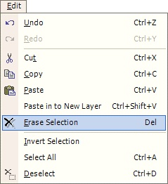
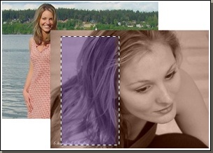

Erase Selection Operation
|
 The erase operation is similar to the cut operation, but differs in that the cut region is not saved to the clipboard. To better illustrate this operation, see the example below. |
|  |
|
| This image consists of two layers. Notice on the topmost layer (the graphic closest to you), there is a rectangular selection region. | Once the selected region is 'erased', you can see the layer underneath (i.e., the erased region is 100% transparent). |